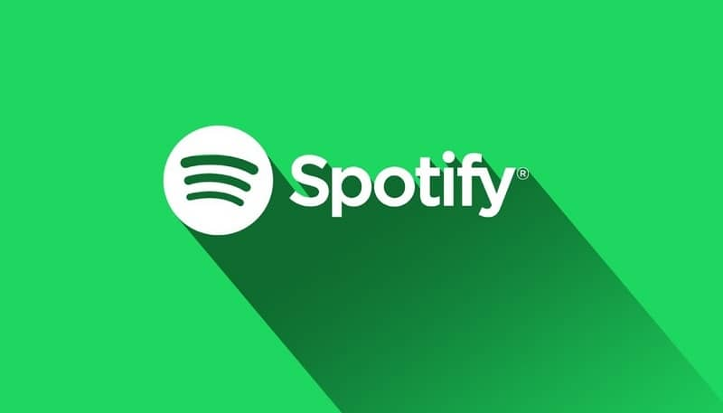
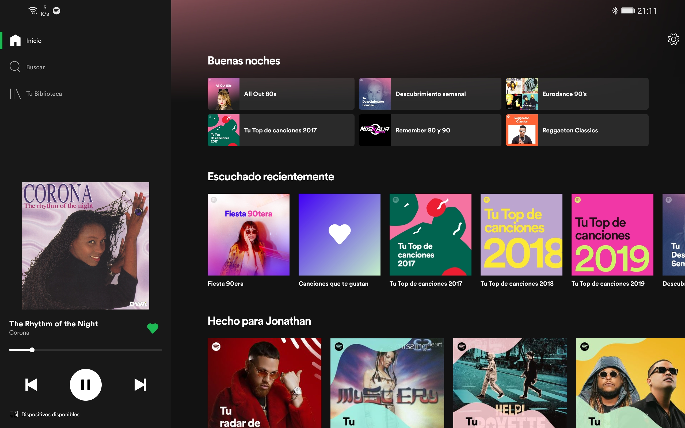

como usar espotify
recomendaciones para usar spotify
spotify es una app para escuchar musica de manera online

Spotify es de origen sueco y nació de la unión de las dos pasiones de su creador, Daniel Ek: la informática y la música. Daniel era tan precoz que fundó su primera empresa con solo 14 años: llegó a contratar a sus compañeros de Instituto para trabajar en la creación y diseño de webs
spotify te da opciones para poder escuhar musica de manera online y no tener que descargarlas
tambien tiene una opcion paga que te da mejoras como poder escuhar la muscia sin anuncios o poder escuhar las canciones sin necesidad de usar en internet
la pagina te da algunas recomendaciones como lo mejor de los artistas de cada pais o las mejores 50 canciones del momento
los 20 mas escuchados son:
1 Justin Bieber 82.14
2 The Weeknd 74.06
3 Ed Sheeran 71.96
4 Dua Lipa 65.57
5 Doja Cat 60.40
6 Ariana Grande 59.87
7 J Balvin 58.68
8 Billie Eilish 56.59
9 The Kid Laroi 56.35
10 Olivia Rodrigo 55.77
11 Bruno Mars 55.55
12 Lil Nas X 55.07
13 David Guetta 54.64
14 Drake 51.11
15 Maroon 5 50.83
16 Måneskin 49.36
17 Bad Bunny 48.82
18 DaBaby 48.80
19 Khalid 47.80
20 Post Malone 46.24
